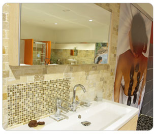

Fercor nace como punto de partida de la empresa Grupo Nazasur, partiendo de la idea de realizar obras de alicatado y solado a pequeña escala, y dedicarse a suministrar el material a los clientes que van surgiendo en su pequeño establecimiento.
Actualmente, con sus nuevas instalaciones de alrededor de 1600 metros cuadrados se dedican a ofrecer al cliente una amplia gama de materiales para pavimentación y revestimiento dentro de las últimas tendencias así como hidromasajes, sanitarios, griferías y complementos de baño; con una exclusiva atención al cliente, intenta hacer de la calidad su principal virtud, para establecerse como principal referencia por su amplia gama de productos, entre los distribuidores.
